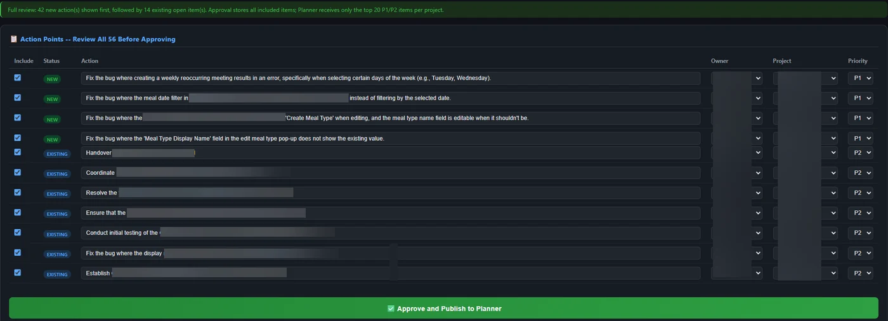
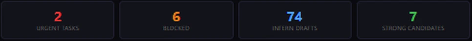

Six production pipelines for project management and operations. Each has its own job, its own schedule and its own approval step. Nothing sends, publishes or deletes without a person signing off.
Meeting transcripts become a searchable record: summary, decisions, owners and priorities. Every action item is logged, turned into a task and kept on the reports until it is closed.
By hand: 45 to 60 minutes of prep and 45 to 60 of notes per meeting, and the notes caught 5 to 10% of what was said. Now: 10 to 15 minutes of prep and about 20 of review. Estimated: over 400 hours saved.
Reads every application, scores it against set criteria, reviews the candidate's code, files the CV and drafts a personal reply with advice on how to improve. A resubmission is scored again.
Personal details are stripped before anything reaches the model, and every applicant is told by email that AI is used. By hand: 60 to 90 minutes per candidate plus 15 to 30 for the task card, and code review never happened. Now: about 30 minutes of my review. Estimated: over 200 hours saved.
One report per project, drafted from the record. I edit it and send it.
By hand: 60 to 120 minutes of looking up, documenting and writing, and the report got skipped when the workload was high. Now it gets edited and sent. Estimated: over 200 hours saved.
Priorities from every source combined into one view that surfaces what matters most, without opening email or being pulled off task.
Ask in plain English what was decided, who owns what, or where an applicant stands. It answers from the database and sends updates on open items. Used daily.
Scores every new job posting against a written skill profile, three times a day, and ranks them. I decide what to apply for.
Nobody reads that many by hand.
Built as a development pipeline, not a filter. Nobody is ghosted: every applicant gets a reply, a score and specific advice, and can come back. Each round shows who is most motivated and who is most skilled.
About 90% of the process is automated, with a person in the loop for the last 10%. One person runs it, in production for over a year. The earlier manual version, at another organization, took three people four years to place 6 to 8 students a year. The 90% is my estimate. Two new students join at every break, about 8 a year. The figures above are annual.


Counts come from the pipelines' own records. Hours are estimates: the minutes the work took by hand before, against the minutes of review now, taking the low end of each range. Where I would never have done the work by hand, such as capturing a whole meeting or reading every posting, I count it as capacity, not hours.
All six run today, for my own work and for clients. The transcript and action-point follow-up has run for five separate clients.
Terms: AI automation, AI agents, workflow automation, meeting intelligence, action-item tracking, candidate screening, project reporting, chatbot, Microsoft Graph, human in the loop, GDPR.